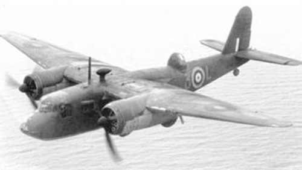

B-26 Botha

- Разработчик: Blackburn
- Страна: Великобритания
- Первый полет: 1939
- Тип: Бомбардировщик-разведчик
Когда Министерство авиации Великобритании опубликовало спецификацию на трехместный двухмоторный разведывательный бомбардировщик,
способный нести торпеду, в ответ поступила техническая документация из Blackburn и Bristol. В заявках обеих самолетостроительн
ых фирм предлагалось использование двигателя Bristol Perseus мощностью 850 л.с. Однако вскоре в техническом задании экипаж был
увеличен до четырех человек, что привело к выпуску новой спецификации и последующему заказу двух прототипов под обозначениями B
-26 Botha и Beaufort соответственно.
Возросшая в результате пересмотра проектов масса привела к тому, что самолет Beaufort был оснащен звездообразными двигателями B
ristol Taurus мощностью 1130 л. с., поставки которых были ограничены, а на начальных производственных версиях самолета Botha до
лжны были использоваться двигатели Bristol Perseus X мощностью 880 л. с. В 1936 г. поступили заказы на 442 самолета, и первая с
ерийная машина поднялась в воздух 28 декабря 1938 г. По итогам летных испытаний была увеличена площадь хвостового оперения и ус
тановлены рули высоты с роговой компенсацией для улучшения продольной управляемости. Затем были произведены испытания машины к
ак торпедоносца.
Первый самолет Бота поступил в распоряжение Королевских ВВС Великобритании 12 декабря 1939 г. В первой половине 1940 г. произ
ошла серия необъяснимых катастроф, в связи с чем самолет Бота подвергся резкой критике. Фирма Bristol сумела нарастить мощно
сть двигателей Perseus Mk XA до 930 л. с., были внесены некоторые дополнительные улучшения, но самолет Бота показывал явно п
лохие боевые качества и его решили передать в тренировочные подразделения, где он продолжал попадать в роковые аварии. В конц
е 1942 г. некоторые планеры поступили в Школы технической тренировки Королевских ВВС. Несколько самолетов Бота использовались
для буксировки мишеней. Всего было построено 580 самолетов Бота. Эту машину списали в сентябре 1944 года.
| Летно технические характеристики | |
|---|---|
| Модификация | Botha |
| Размах крыла, м | 17.98 |
| Длина, м | 15.58 |
| Высота, м | 4.46 |
| Площадь крыла, м2 | 48.12 |
| Масса, кг | |
| - пустого самолета | 5366 |
| - нормальная взлетная | 8369 |
| Тип двигателя | 2 ПД Bristol Perseus ХА |
| Мощность, л.с. | 2 х 930 |
| Максимальная скорость , км/ч | 401 |
| Крейсерская скорость , км/ч | 341 |
| Практическая дальность, км | 2044 |
| Практический потолок, м | 5335 |
| Экипаж, чел | 4 |
| Вооружение: | один передний 7,7-мм пулемет и два 7,7-мм пулемета, расположенные на надфюзеляжной турельной установке; торпеда, внутри фюзеляжа, бомбы или глубинные заряды весом до 907кг. |